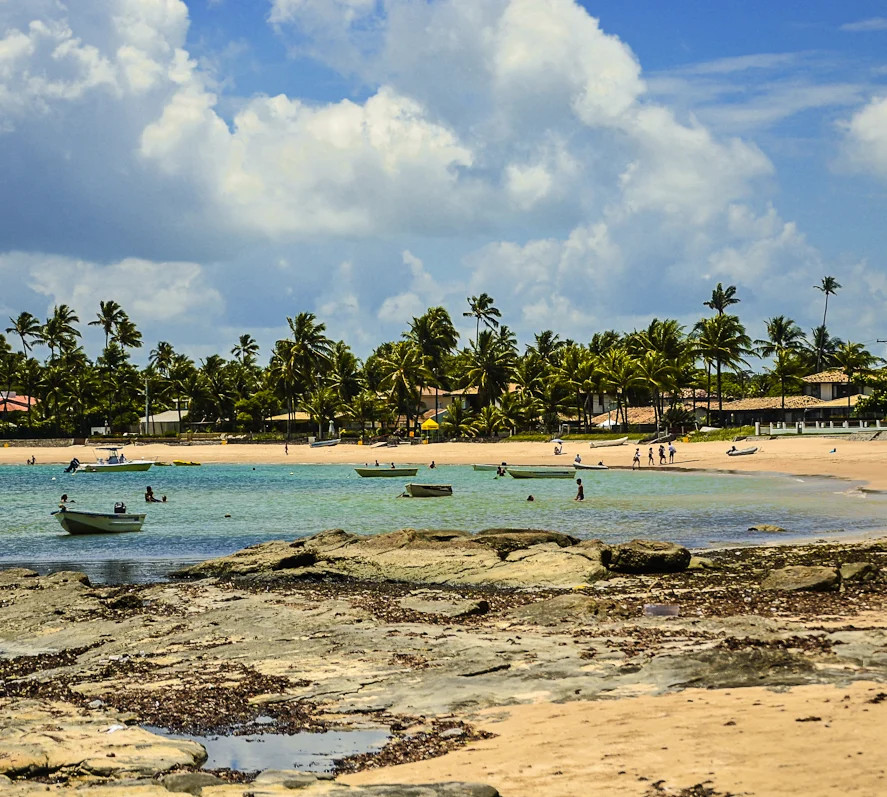
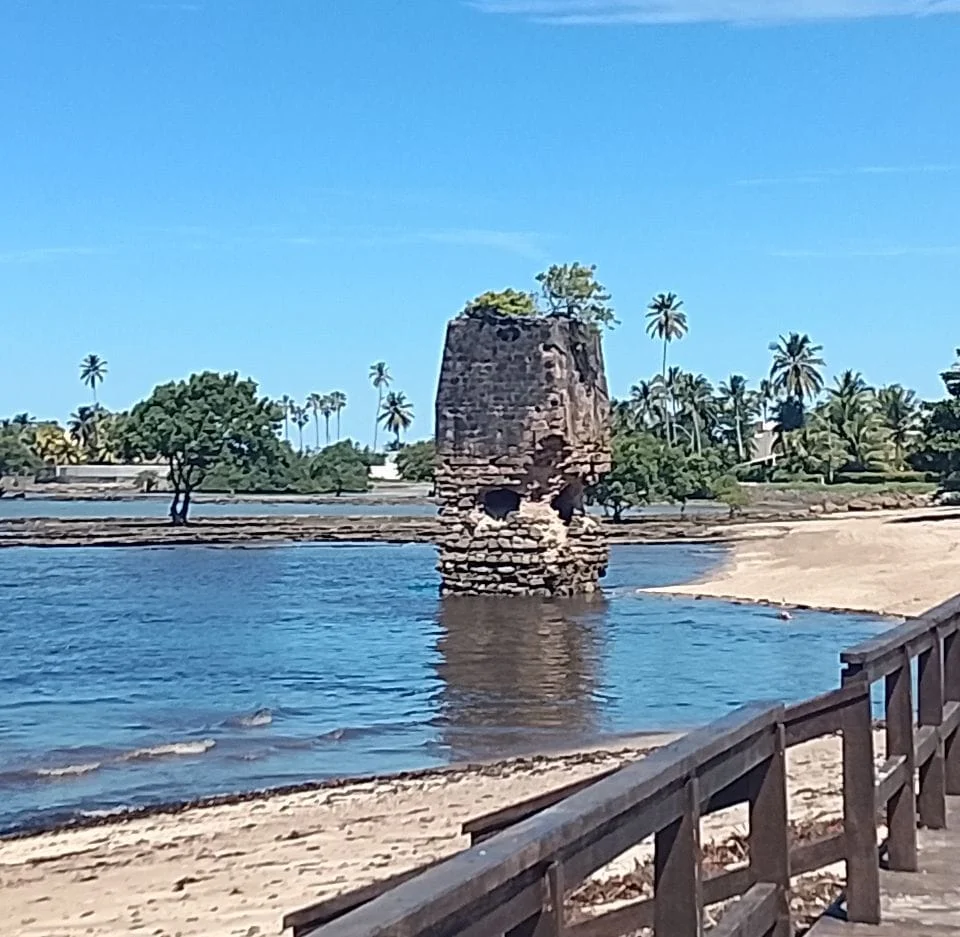
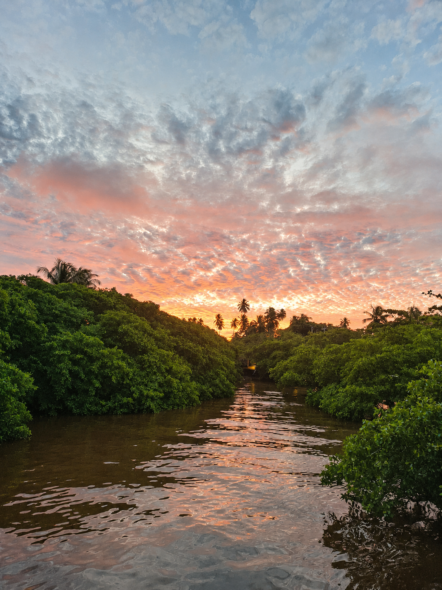

Fé e arquiteturaCapela construída no período colonial.

Vera Cruz · Bahia
Explore↓
Penha
Entre águas tranquilas, fé e pedras antigas, a comunidade guarda um dos encontros mais bonitos entre paisagem e memória de Vera Cruz.
Mar, patrimônio e vida comunitária
01
02
03
Uma paisagem que guarda diferentes tempos
Na Penha, a vista para a Baía de Todos-os-Santos divide espaço com uma capela histórica, vestígios da produção de cal e lembranças de antigos caminhos pelas águas.
A comunidade integra o conjunto de localidades pesqueiras de Vera Cruz. A relação cotidiana com o mar aparece nas embarcações, na leitura das marés e nas histórias contadas por moradores.
Memória do trabalhoAntigo forno ligado à produção de cal.
Paisagem costeiraPraia, recifes, marés e vista para Salvador.

As pedras contam histórias
O patrimônio permanece visível na capela e no antigo forno.
A maré redesenha a praia
Recifes e faixas de areia surgem e desaparecem ao longo do dia.
A memória vive nos moradores
Relatos locais ajudam a ligar a paisagem atual ao passado.
Capela de Nossa Senhora da Penha
Uma pequena construção diante da baía que atravessou séculos como referência de fé, paisagem e pertencimento.
01
Final do século XVIIPeríodo atribuído à construção
Nave e capela-morOrganização interna registrada
Torre piramidalElemento marcante da fachada
Óculo circularAbertura semelhante a uma rosácea
Uma capela colonial entre o jardim e o mar
A revista comemorativa dos 37 anos de Vera Cruz registra que a construção da Capela de Nossa Senhora da Penha data do final do século XVII. O edifício possui nave, capela-mor, corredor lateral e sacristia.
A fachada reúne o corpo principal e uma torre com terminação piramidal. No corpo central aparecem uma portada simples com cercadura de pedra, duas janelas na altura do coro e um óculo circular semelhante a uma rosácea.
Patrimônio que precisa de cuidado
Conhecer a arquitetura também significa valorizar sua conservação, evitar danos e respeitar o uso religioso do espaço.
Pedras, fogo e trabalho
01
02
03
04
O antigo Forno da Penha
A ruína à beira-mar é uma das marcas mais reconhecíveis da antiga produção de cal em Vera Cruz.
A cal era utilizada em paredes, revestimentos e pinturas. Na região, sua produção aproveitava materiais marinhos, como conchas e fragmentos calcários, combinados com lenha em uma queima prolongada.
Registros da história municipal associam a Penha e a Gamboa às antigas caieiras. A produção local também se relacionava ao abastecimento de obras em Salvador, transportada pelas águas da Baía de Todos-os-Santos.
ColetaConchas e materiais calcários eram reunidos na faixa costeira.
MontagemCamadas de matéria-prima e lenha alimentavam o forno.
QueimaO calor intenso transformava o material em cal viva.
Uso e circulaçãoA cal seguia para construções locais e outros pontos da
baía.
O forno não é apenas uma ruína. É um documento de pedra sobre trabalho, técnica, circulação de mercadorias e transformação da paisagem.

História em movimento
Veja uma reconstrução do funcionamento do forno
O vídeo apresenta visualmente as etapas de coleta, organização do material, queima e obtenção da cal.
Use os controles para reproduzir, pausar, ajustar o volume ou abrir em tela cheia.
Rio da Penha
memória de navegação
Caminhos pelas águas
Antes
Navegação e ancoradouro
Transformação
Mudanças na paisagem
Hoje
Memória como fonte
Quando o Rio da Penha era navegável
Uma antiga revista do município registra que o rio era utilizado para navegação e possuía um ancoradouro conhecido como Ponte dos Burgos.
Esse relato ajuda a imaginar uma Penha conectada por rotas aquáticas, em uma época em que rios, enseadas e canais funcionavam como caminhos para pessoas, materiais e mercadorias.
O mesmo registro afirma que a paisagem foi modificada ao longo do tempo. Comparar fotografias, mapas e relatos orais pode ajudar a entender onde passava o rio e como o território mudou.
O rio funcionava como passagem e ponto de apoio para embarcações.
Intervenções e alterações naturais modificaram o curso e sua aparência.
Documentos e histórias de moradores ajudam a reconstruir esse passado.
Registro histórico · Revista Vera Cruz, 37 anos
A Penha nas páginas de uma antiga revista
Em vez de exibir os recortes escaneados como parte do layout, esta seção refaz a reportagem em formato digital. O texto da publicação foi reorganizado para leitura na tela e as fotografias antigas aparecem isoladas como documentos históricos.
Um registro de época
O conteúdo abaixo vem da revista comemorativa Vera Cruz, 37 anos. Ele preserva a forma como a publicação descrevia o município naquele período. Os textos foram transcritos e tiveram apenas as quebras de linha e hifenizações de coluna retiradas para facilitar a leitura.
A Ponte dos Burgos
No passado o Rio da Penha era utilizado na navegação, inclusive dispunha até de ancoradouro, chamado Ponte dos Burgos. No entanto, hoje, o acidente geográfico está com sua paisagem modificada, diferente de antigamente.
Transcrição da revista: texto apresentado em leitura contínua, sem as quebras provocadas pelas colunas do impresso.
No século XVI começou a colonização
A colonização de Mar Grande data do século XVI, quando os Jesuítas da Companhia de Jesus fundaram no alto de uma colina um povoado, com a finalidade de catequizar os índios Tupinambás, primeiros habitantes da ilha. Ali os jesuítas construíram uma igreja, sob a invocação do Senhor da Vera Cruz, cujas obras foram concluídas em 1561, dando-se a inauguração no dia 14 de Setembro, data das festividades em louvor ao Padroeiro.
Na parte mais baixa do povoado, foi construído um tanque para o abastecimento de água dos habitantes. É o conhecido tanque das lendas, no qual os jesuítas obrigados a deixar nossas terras, atiraram ali todo o ouro, a fim de que não fosse revertido à Coroa Portuguesa.
Anos depois, os moradores abandonaram a colina, fixando-se nas proximidades do mar, formando um novo povoado que deram a denominação de Baiacu, devido a grande quantidade de peixes dessa espécie.
Importante: a página da revista combina uma fotografia aérea da Penha com uma reportagem que trata da colonização de Mar Grande e da formação de Baiacu. Por isso, a imagem é apresentada aqui como registro histórico da paisagem da Penha, sem afirmar que todo o texto se refere à comunidade da Penha.
Praia da Penha
Águas claras, recifes, faixas de areia e uma vista ampla criam uma paisagem bonita em todas as marés, mas nunca exatamente igual.
A beleza muda com a maré
Na maré baixa, as pedras aparecem e formam piscinas rasas. Na maré cheia, a água ocupa novamente os recifes e aproxima o azul do mar da faixa de areia.
A praia é também espaço de moradia, circulação, trabalho e convivência. A visita responsável começa pelo respeito aos moradores e termina com a retirada de todo resíduo levado ao local.
A Penha em vídeo
Um passeio pela cor do mar
O vídeo vertical mostra a faixa costeira e ajuda a perceber a transparência da água, a extensão da praia e a relação entre a comunidade e a baía.
Visite sem deixar rastros
Observe a tábua de marés, evite caminhar sobre organismos vivos nos recifes e leve o lixo de volta.
Do jardim da capela às pedras do forno
Quatro imagens, quatro formas de enxergar uma comunidade que não cabe em um único cartão-postal.
Conecta Vera Cruz · Memória coletiva
Vozes da Penha
Você conhece alguma história, tradição, lenda ou curiosidade sobre a Penha? Compartilhe sua lembrança e ajude a preservar a memória da comunidade.
Compartilhe uma memória
Conte algo que você viveu, ouviu dos moradores antigos ou acredita que merece ser lembrado.
Evite divulgar telefone, endereço ou outras informações pessoais.
Mural da comunidade
0 publicações
Memórias compartilhadas
Pesquisa e memória
Fontes da página
Esta página combina fotografias e vídeos recentes com registros históricos, pesquisas sobre comunidades pesqueiras e memória local.
- Revista comemorativa Vera Cruz, 37 anos, especialmente as páginas 4 e 5, com registros sobre a Ponte dos Burgos, o Rio da Penha, a produção de cal e a vista aérea com a Igreja da Penha e o casarão tradicional.
- Artigo sobre comunidades tradicionais pesqueiras de Vera Cruz, que inclui a Penha entre as localidades ligadas à pesca artesanal.
- Fotografias, vídeos e conteúdo organizado pelo projeto Conecta Vera Cruz.